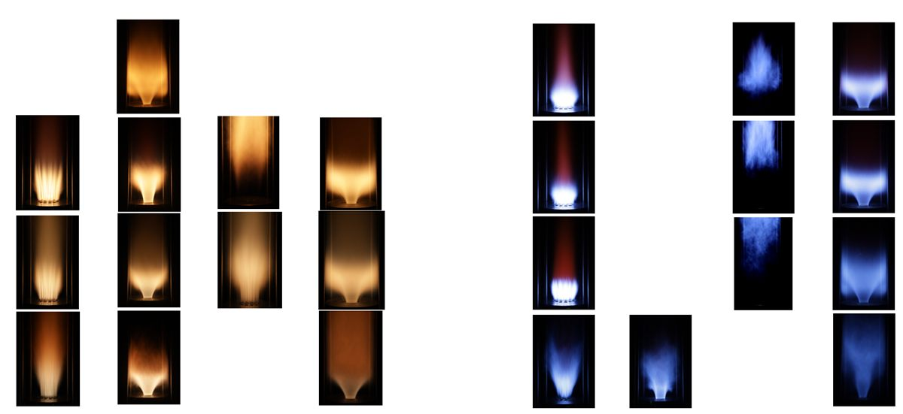

ResearchRiset研究
Thermochemistry and thermal engineering for low- and non-carbon power generation, from fundamental flames to plant-scale systems.Termokimia dan rekayasa termal untuk pembangkitan rendah dan non-karbon, dari nyala fundamental hingga sistem skala pembangkit.低炭素・非炭素発電のための熱化学と熱工学。基礎火炎からプラント規模のシステムまで。
Three levels of evidence in every themeTiga tingkat bukti di setiap temaすべてのテーマで3段階の検証
- ExperimentsEksperimen実験: burners, engines, fluidized beds, absorbers and furnaces that generate validation databurner, mesin, fluidized bed, absorber, dan tungku yang menghasilkan data validasi検証データを得るためのバーナ、エンジン、流動層、吸収塔、炉
- SimulationSimulasiシミュレーション: CFD (RANS/LES), detailed kinetics, Aspen process models and dynamic plant modelsCFD (RANS/LES), kinetika rinci, model proses Aspen, dan model dinamik pembangkitCFD（RANS/LES）、詳細反応機構、Aspenプロセスモデル、プラント動特性モデル
- Techno-economicsTekno-ekonomi技術経済評価: cost, carbon pricing and policy analysis that shows what can be deployedanalisis biaya, harga karbon, dan kebijakan untuk menilai kelayakan penerapan導入可能性を示すコスト・炭素価格・政策分析
Indonesia's thermal fleet will run for decades. We focus on routes that decarbonize this existing infrastructure quickly and affordably.Armada pembangkit termal Indonesia akan beroperasi puluhan tahun ke depan. Kami berfokus pada jalur yang dapat mendekarbonisasi infrastruktur yang ada secara cepat dan terjangkau.インドネシアの火力発電設備は今後数十年稼働します。既存インフラを迅速かつ低コストで脱炭素化する道筋に注力しています。

Our four research themesEmpat tema riset kami4つの研究テーマ
How the themes connectKeterkaitan antartemaテーマのつながり
- Make the fuelProduksi bahan bakar燃料をつくるChemical-looping H₂, turquoise H₂, SAFH₂ chemical looping, H₂ turquoise, SAFケミカルルーピング水素・ターコイズ水素・SAF
- Burn it cleanlyBakar secara bersihクリーンに燃やすNH₃/H₂ flames, co-firing with coal, biomass, liquidsNyala NH₃/H₂, co-firing dengan batubara, biomassa, cairanNH₃/H₂火炎、石炭・バイオマス・液体燃料との混焼
- Run the plantOperasikan pembangkitプラントを動かすFlexibility, storage, digital twinsFleksibilitas, penyimpanan, digital twin柔軟運用・蓄熱・デジタルツイン
- Lock away CO₂Ikat CO₂CO₂を固定するMineralization with fly ash and by-productsMineralisasi dengan fly ash dan produk sampingフライアッシュ・副産物による鉱物化
Indonesia Net Zero 2060Net Zero Indonesia 2060インドネシア2060年ネットゼロ
Co-firing, fuel switching and flexibility retrofits are near-term options for the existing coal and gas fleet.Co-firing, penggantian bahan bakar, dan retrofit fleksibilitas adalah opsi jangka pendek untuk armada batubara dan gas yang ada.混焼、燃料転換、柔軟性改造は既存の石炭・ガス火力にとって短期的な選択肢です。
SDG 7 · 9 · 13
Clean energy, resilient industrial infrastructure and climate action.Energi bersih, infrastruktur industri yang tangguh, dan aksi iklim.クリーンエネルギー、強靭な産業インフラ、気候変動対策。
Standards & policyStandar & kebijakan規格・政策
Our PI serves on national hydrogen standards committees, linking lab results to regulation.Ketua lab kami menjadi anggota komite standar hidrogen nasional, menghubungkan hasil riset dengan regulasi.研究代表者は国家水素規格委員会の委員として、研究成果を規制へつなげています。